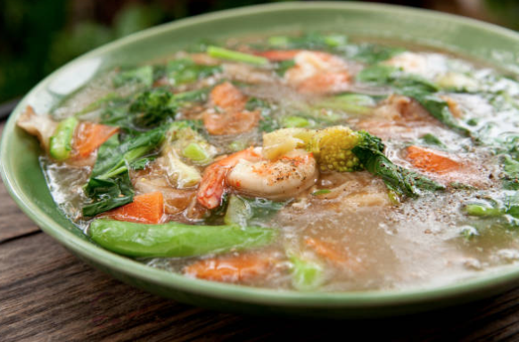

Ladna 
Description
Ladna is a popular Thai dish, consisting of wide rice noodles,
whose texture alone will send your tastebuds to heaven, your choice of protein,
chinese brocoli, and soy sauce. It was one of the more authentic Thai dishes that I fell
in love with during my time living in Thailand. Although, it's not considered anything
special by the locals, ladna will always be one of the dishes I miss most in Thailand.
Ingredients
- wide rice noodles
- tofu or pork
- Chinese broccoli
- black soy sauce
- oyster sauce
- garlic
- white pepper
- sugar
- tapioca starch or cornstarch
- chili flakes
Steps
- Heat a wok or sauté pan over high heat. Once it begins to heat, mix in the black soy sauce
and the noodles. Make sure the sauce coats the noodles, and leaves them a smoky brown color.
When the noodles begin to clump, they are finished cooking, and you can remove them from the heat.
- In a wok or saucepan over medium head, add 2pbsp of vegetable oil, chopped garlic, and fermented soy
bean paste. Saute everything together until you the notice the garlic browning.
- Once the garlic has started to brown, add the stock, soy sauce, sugar , and white pepper. Bring it to a
boil.
- Once the sauce has reached a boil, add the tofu or pork.
- Once the sauce returns to a boil, add the Chinese broccoli.
- Taste, and add seasoning as you see fit.
- Serve, and Enjoy!